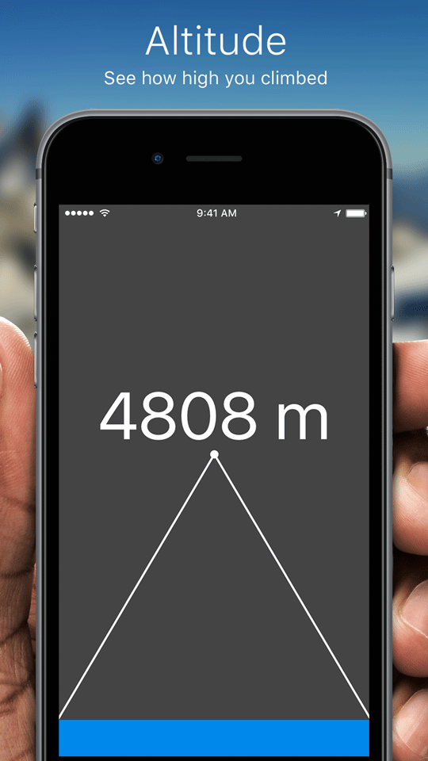
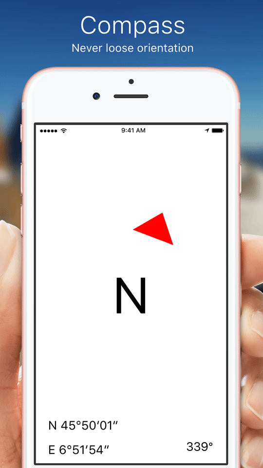
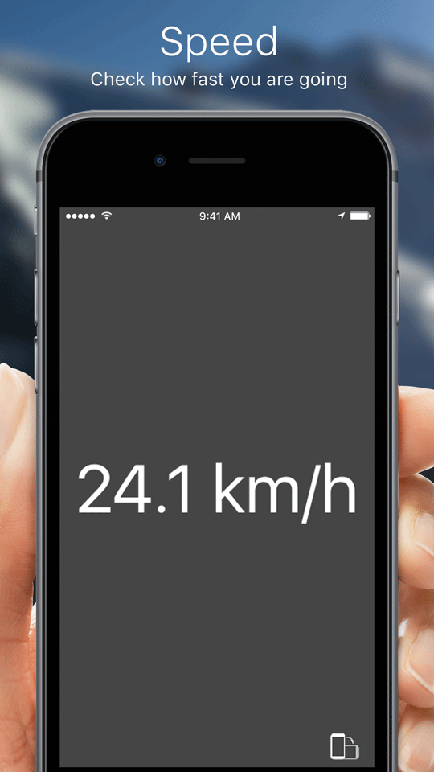
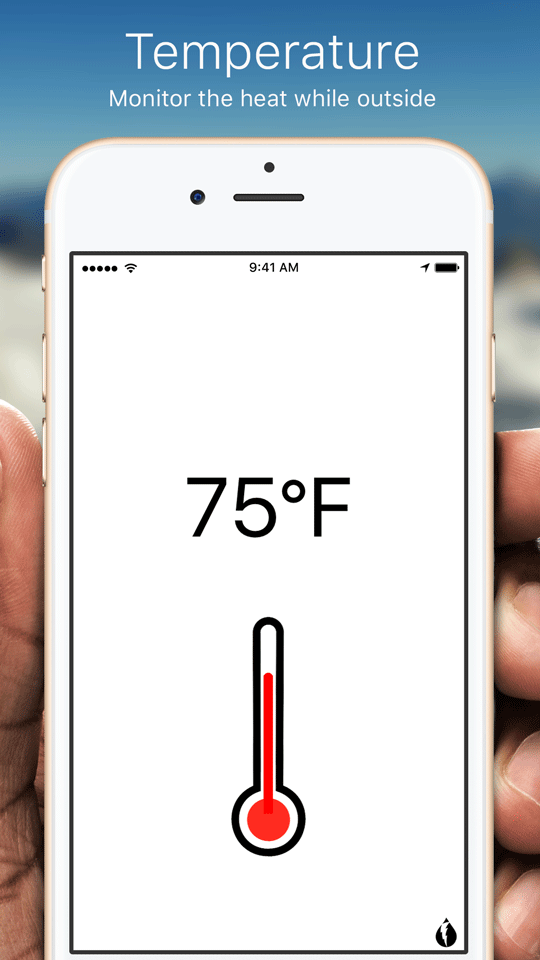
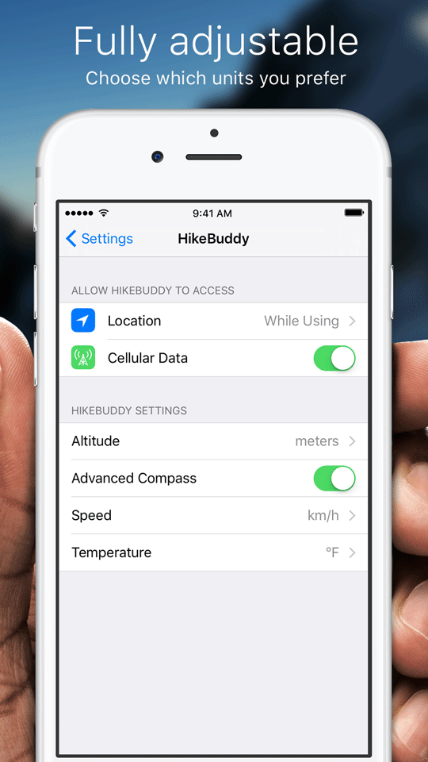

HikeBuddy
I started this project over Summer 2016 to experiment with the location data that the iPhone offers. For the temperature data I decided to use the Dark Skies API as I think it is the best on the makret right now. With the newly announced Apple Watch Series 2 with GPS, it offers similar capabilities even without iPhone, which is why I am currently working on bringing the same features to an independent Apple Watch App.
iPhone




